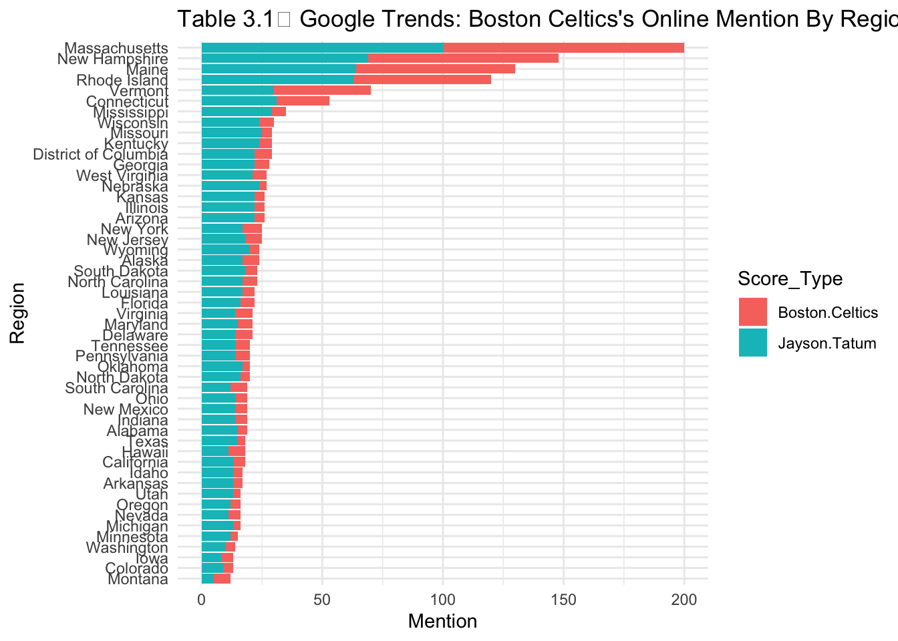

3.1 Boston Celtics
The Boston Celtics, one of the oldest and domiannt NBA franchises, boasts a rich history and has significantly influenced the development of both the National Basketball Association and basketball as a prominent Olympic sport genre.
Since its founding in Boston in 1946 (Augustyn 2023), the evolution of its core fan culture has been significantly shaped and driven by the sports fan community in Boston. This fan base gradually extended to encompass the greater New England area, with Boston as its focal point (see below table 3.1).
ggplot(long_data, aes(x=reorder(Region, Score), y=Score, fill=Score_Type)) +
geom_bar(stat="identity") +
coord_flip() +
theme_minimal() +
labs(title="Table 3.1： Google Trends: Boston Celtics's Online Mention By Region", x="Region", y="Mention")
References
Augustyn, Adam. 2023. “Boston Celtics.” Encyclopaedia Britannica. https://www.britannica.com/topic/Boston-Celtics.